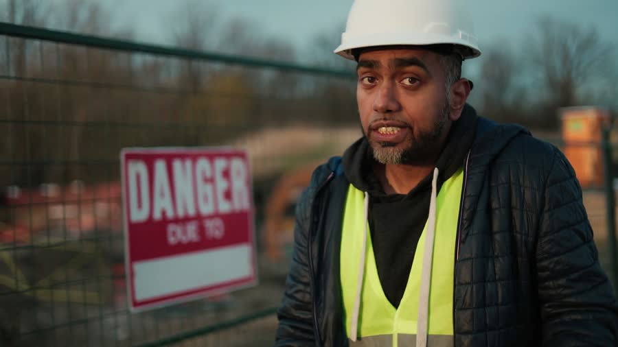
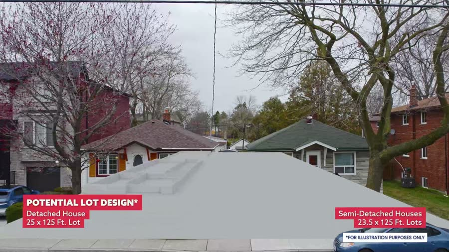
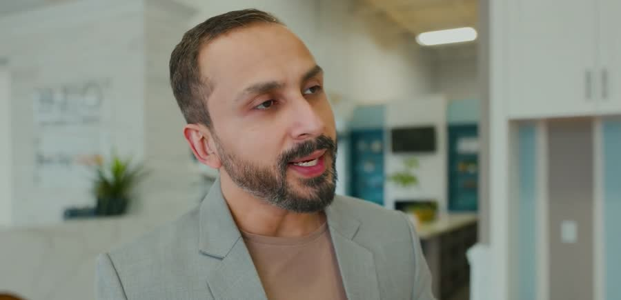

- Graphics that win on LinkedIn
- Stop the before-and-after
- Documentary series
- Customer testimonials
- Why choose your company
- Winning before the RFQ
In front of the people who award the work.
And in front of the people you need to hire. Video is how we do it. It is not what we sell.
For general contractors, subcontractors and trades, developers, consulting engineers and owner’s reps across Ontario.
Who we’ve worked with



What AEC gets wrong on LinkedIn.
Not a lack of effort. Six habits, and every one of them is fixable.
They treat LinkedIn like Facebook
Broadcast to a company page, then hope.Post and ghost
No engagement before or after publishing, when the algorithm requires both.The company page as the main lever
The personal page is what actually carries reach and trust.Before-and-after as the entire strategy
It proves you finished a building. Every bidder can prove that.No funnel
Nothing at the top, nothing in the middle, everything asking for the meeting.A quiet belief that it cannot generate leads
Which is exactly why the field is still open.
You can’t influence an evaluator once the window is open. So the work has to be finished before it opens.
One production engine. Three doors.
Same crew, same shoot days. What changes is whose desk it lands on.
- Decision makers are on LinkedIn. Be in front of them.
- Reach your core clients directly
- Stop the post and ghost
- DMs and engagement that open doors
- A funnel, not a feed
- The talent is already in the industry
- Show the culture, not the job post
- A day on your site, as it really goes
- Two organic hires a year pays for the year
- Business development happens on LinkedIn. Recruiting happens where the talent actually is.
Platinum Construction had no sales function.
Pure word of mouth and referrals. In roughly three months we produced twelve meaningful conversations with national brands — McDonald’s, Tim Hortons, Subway and A&W — and placement on a vendor list they had never been on.
Twelve conversations is activity. A procurement gate that stays open after the campaign ends is a change to what they are eligible to bid on.
Nothing has closed yet. We don’t promise closes in ninety days. We promise you’re in the room.
Construction cycles run 6 to 18 months, and every buyer in this industry already knows it.

The videos, by what they do.
Not a reel. Formats built for one industry, each answering a question a buyer or a candidate is already asking.

Documentary
How your team thinks when a job goes sideways. The part no scoresheet measures.

The podcast
Our intelligence system. We ask owners what they weigh, then build against the answer.

Development
What the site becomes, before it exists.

Team depth
One bench, two buyers: the owner asking who runs the job, the 22-year-old asking who to work for.
Also in the engine: behind the scenes, factory, commercials, testimonials, and answer-the-public.
Tell us the next project you want in the room.
No deck and no pitch. A conversation about what your next project could look like on film, and who should see it.